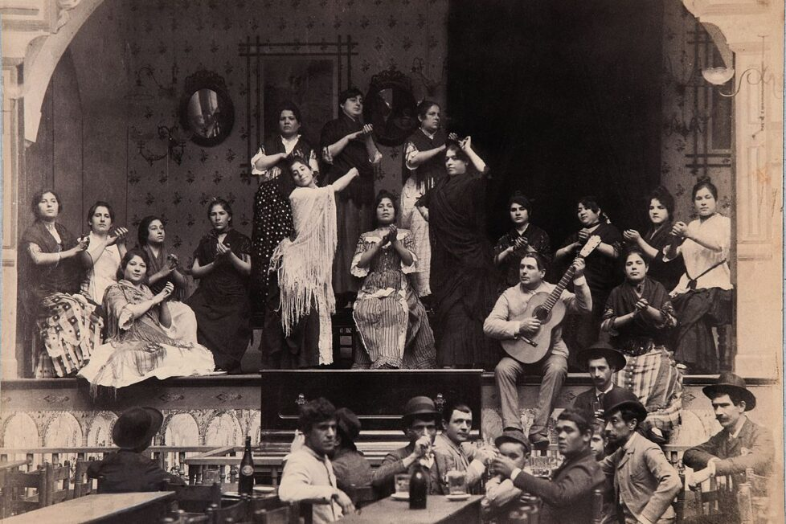

Flamenco Pura
Flamenco music is a rich and vibrant art form that originated in Andalusia, Spain, in the 19th century. It is
characterized by its passionate singing and dancing, as well as its use of traditional instruments such as the
guitar, palmas (hand clapping), and cajón (flamenco box drum).
Flamenco music performance in Andalusia.

The roots of flamenco music can be traced back to the 15th century, when the Roma people (also known as Gypsies)
began to migrate to Spain from India. The Roma brought with them their own unique musical traditions, which
blended with the existing musical traditions of Andalusia. This blending of cultures created a new and vibrant
musical form: flamenco.
Roma people playing traditional instruments.
Flamenco music was originally performed in private gatherings and informal settings. However, in the late 18th
century, flamenco began to be performed in public venues, such as cafés cantantes (singing cafés). These cafés
cantantes were very popular, and they helped to spread the popularity of flamenco music throughout Spain.
Café cantante in Spain in the late 19th century.
In the early 20th century, flamenco music began to gain international recognition. This was due in part to the
efforts of famous flamenco artists such as Manuel de Falla and La Argentinita. These artists toured extensively
throughout Europe and the Americas, and they helped to introduce flamenco music to a wider audience.
Manuel de Falla, a famous flamenco composer.
La Argentinita, a famous flamenco dancer
Today, flamenco music is more popular than ever before. It is performed all over the world, and it is enjoyed by
people of all ages and cultures. Flamenco music is also a UNESCO World Heritage Site, a recognition of its
importance and significance.